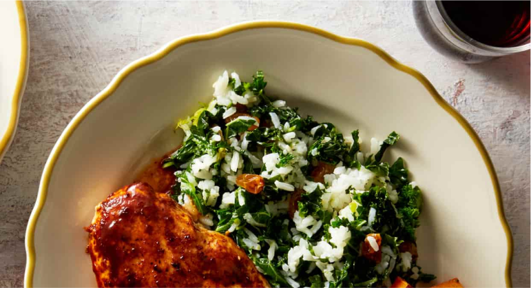

CHICKEN
Ancho Orange Chicken
with Kale Rice and Roasted Carrots
45 Mins
Serving 4
600 Cals
We're amping up chicken breasts with a glaze of smoky ancho chile paste and fresh orange juice in this recipe. On the side, roasted carrots and lightly creamy, golden raisin-studded rice perfectly accent the sweetness of the glaze.